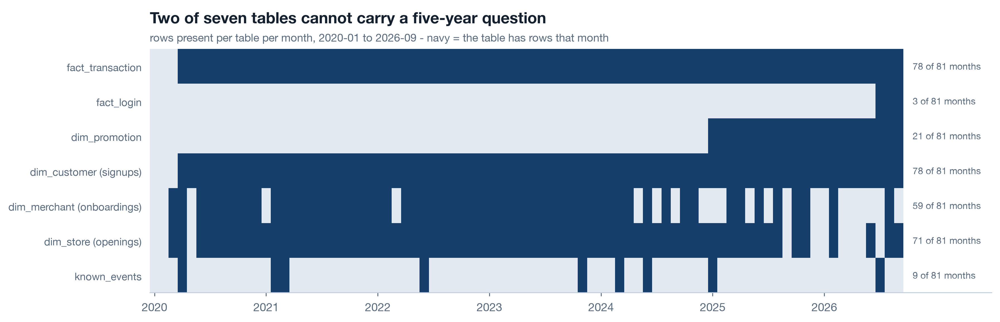
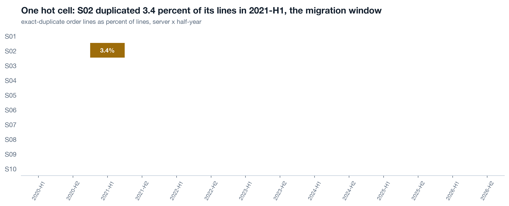

Where this track goes
Today (a1) maps the data. a2 follows the margin through five years of transactions and names the mechanism behind the 2024 break. a3 walks the product hierarchy and the baskets. a4 measures merchants and stores - acquisition, survival, dormancy. a5 does customer retention with frozen history, the promotion double edge, the two-month login funnel, and assembles the canon numbers the chairman pages quote. Everything runs on the repo's seeded synthetic dataset (data/generate_data.py, planted truths documented at the top of the file) through one shared reader, analysis/lib.py, so a schema change lands in exactly one place. Work along in notebooks/a1_data_map.ipynb.
Say the grain, draw the joins 7 min live
One row of fact_transaction is an order LINE: one SKU inside one order. Revenue, cost and profit are additive at the line. Orders are distinct txn_id. Customers are distinct customer_id with blanks excluded, because guest checkout leaves the field empty. Every chart states its grain in the title, because most dashboard disagreements are two people counting different things and calling them the same name.
Live One reader, one truth 3 min▶
Every notebook in the track imports the same module. Nothing in notebooks/ parses a CSV on its own. This is not tidiness; it is how five notebooks stay consistent when a column is renamed or a dedupe rule changes - two scripts parsing the same file with their own logic are two sources of truth wearing a costume.
Later sessions load with dedupe=True. Today you load raw on purpose, so the duplicate defect shows up in your own scan instead of being silently removed by a flag you did not know existed.
Live The grain table 4 min▶
Write the grain table before the first chart. It is the single page a new analyst reads to avoid every classic mistake on this dataset.
| Table | Grain | Date column | Keys out |
|---|---|---|---|
| fact_transaction | order line | ts | server, merchant, store, customer, sku, promo |
| fact_login | login session | login_ts | customer, server, merchant |
| dim_promotion | campaign | start_date | merchant (optional) |
| dim_customer | customer | signup_month | store, merchant, server |
| dim_store | store | open_month | merchant, server |
| dim_merchant | merchant | onboard_month | server |
| dim_product | SKU | - | merchant (when owner = merchant) |
| known_events | remembered event | event_date | scope text, no key |
Self-study The owner axis on products 3 min▶
dim_product carries an owner column: platform for the 98 standard SKUs and merchant for the 1,075 customised SKUs each merchant created from the platform's lines. Same category, same product line, different SKU, different price and cost. This axis is what makes the customisation question in a3 and a5 answerable at all - if the platform had stored customised orders under the base SKU, the finding that customised goods retain customers better could never have been computed. When you design a catalogue, keep the base line and the owner separate, and never overwrite one with the other.
Coverage before analysis 6 min live
The single most important chart before any analysis: rows per table per month, as a presence heatmap. A five-year question can only be answered by a table with five years. Two of Printwell's tables cannot carry the chairman's questions, and it is far better to know that in the first hour than in the last slide.
Live Build the coverage heatmap 6 min▶

fact_login has about two months: login analytics was switched on 2026-07-01. dim_promotion starts 2025-01 even though order lines have carried a promo_id since 2020 - the promotion module launched late, and every earlier id points at nothing. Neither gap is dropped; both are filed as data-collection recommendations with a date, in c3.
Self-study Presence is not completeness 3 min▶
A month can have rows and still be incomplete: a table that was backfilled for the last 18 months only, a column added in 2023 and null before, a server whose feed dropped for a week. Three cheap follow-ups after the heatmap:
- Rows per month per server (or whatever your unit is): a unit that vanishes for a month is a feed outage, and it will look like a demand collapse in every later chart.
- Null share per column per year: a column that is 100 percent null before a date has a start date, and every analysis using it inherits that date.
- Row count against a trusted external total (finance's booked revenue per quarter): the reconciliation catches both duplicates and missing loads in one pass.
Do the joins hold, and where does the data lie? 9 min live
Integrity by year, not overall. A join that resolves 95 percent of rows overall can resolve 100 percent in 2020 and 80 percent in 2026, and the trend is the finding. Then an exact-duplicate scan by unit and period: a duplicated order line is a load defect, not two sales, and it names itself when you cut the right way.
Live Key integrity by year 4 min▶

Guest checkout rises from 6 percent of lines in 2020 to 12 percent in 2026. Those orders have revenue but no customer, so every retention number in a5 silently excludes a growing slice - and the chart says so in its title. Promotion ids before 2025 are orphans: the effect of a 2022 campaign on retention is unknowable from this data, however good the analyst.
Live The duplicate scan names the defect 5 min▶

S02 in 2021-H1 carries about 3.4 percent duplicated lines - exactly the window of the order-database migration the team remembers. Raw revenue for that server and half-year is overstated by the same amount. From a2 onward every notebook loads with dedupe=True; the rule lives once, in the shared reader.
Self-study Which questions this data can answer, and until when 4 min▶
The last output of a1 is a table the chairman can read: question, tables needed, answerable span, verdict. It converts "we cannot answer that" from a shrug into a recommendation with a shape.
| Question | Needs | Answerable span | Verdict |
|---|---|---|---|
| Revenue, cost, margin trend by server, merchant, product | fact_transaction | 2020-01 to 2026-09 | yes, full history |
| Customer cohort retention | fact_transaction, customer_id | full, minus guests | yes, with a growing blind spot |
| Login-to-purchase funnel | fact_login | 2026-07 to 2026-09 | two months - no trend, no season |
| Did a promotion type lift baskets or retention? | fact_transaction x dim_promotion | 2025-01 onward | 20 months; earlier ids orphaned |
| Merchant and store acquisition and survival | dims + fact_transaction | full | yes |
| What changed on product or infra when numbers moved? | known_events, 9 rows | sparse | no - there is no event log |
| Fulfilment cost per order | - | - | no - cost is a unit constant per SKU |
The last two rows are the two most valuable recommendations in c3, and they were found in the first hour of the analysis, not the last.
Build the data map in the notebook ★ 22 min · everyone builds
Open notebooks/a1_data_map.ipynb and run it top to bottom once, then rebuild each section yourself against the shared reader. The repo data is seeded, so your numbers match the page's.
Load through lib, raw. Print shapes and spans for every table. Write the grain table as a DataFrame before touching a chart.
Coverage. Assemble the frames dict with one date column per table, call lib.coverage, draw the presence heatmap. Annotate the sparse rows with "N of 81 months".
Integrity by year. Resolve every foreign key against its dimension per year. Chart the two that move: guest share and orphan promo share.
Duplicate scan. Exact duplicates on the natural line key, cut by server and half-year. Print the hot cells above 0.5 percent and match them to known_events.
The question table. For each of the chairman's nine questions, name the tables, the answerable span and the verdict. Save it to reports/: c3 reads it.
Hand-off note. Four lines at the end of the notebook: dedupe on, guests excluded and stated, short windows caveated, events overlaid. a2 starts from this note.
python3 analysis/nbgen.py notebooks/src/a1_data_map.py. A failed run leaves no notebook behind, so a stale passing notebook can never masquerade as a fresh one. Verifiers must be able to fail visibly or they are decoration.
Try it yourself - this week ◐ 45 min
- Run the coverage heatmap on one warehouse you actually work with. Count the tables whose first month is later than the business's first month.
- Pick the fact table you use most and write its grain table: grain, date column, keys out. Send it to one colleague and ask them to find one row they disagree with.
- Run the exact-duplicate scan cut by your operating unit and half-year. Any cell above half a percent gets a name and a date next to it.
What this session draws on
Data mapping is standard warehouse craft rather than a certified course. This page teaches the working core of:
Three questions before you go 🎯 ◐ 90 seconds
1 · The chairman asks how the 2022 Q4 promotion affected repeat purchases. The promo table starts 2025-01. What do you say?
A question a table cannot answer is filed, not fudged. The orphaned ids are a finding about the company's data ownership, and c3 turns it into a recommendation. Extrapolating or proxying would produce a number that looks like an answer and is not.
2 · Overall, 92 percent of order lines carry a customer id. Why cut it by year before moving on?
An overall integrity number hides a trend. A blind spot that grows every year means every later retention chart is a little more wrong than the one before, and the chart title has to say so.
3 · Your duplicate scan shows 3.4 percent exact-duplicate lines on S02 in 2021-H1 and near zero everywhere else. What is the right next step?
The defect gets a cause (the migration in known_events), a single rule in one reader, and a note in the hand-off. Editing the raw file destroys the evidence; ignoring it overstates one server's revenue for a half-year in every later chart.